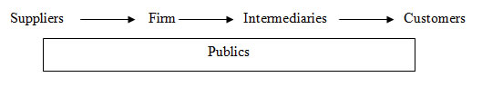

ARM402 :: Lecture 09 :: BUSINESS ENVIRONMENT – MICRO ENVIRONMENT

Most of successful companies have now realized that firms encounter a never ending series of opportunities and threats. The responsibility for identifying significant changes in the macro-environment falls on company's decision makers. Managers should realise that environmental scanning would provide a continuous link between them, their customers and others in the environment. A Manager has to design his marketing strategies based on the emerging marketing environment.
The marketing environment can be classified as micro environment and macro environment. Micro environment includes all elements which have greater interaction with the firm and those that could be influenced by the firm’s policies. The macro environment includes all elements that have an indirect influence on the performance of the company.
Micro Environment
The micro environment comprises of suppliers (raw materials or finished goods to the firm), the firm, intermediaries, customers and publics.

- Suppliers: the suppliers include raw material and other inputs or finished goods suppliers to the firm. The performance of the suppliers can influences the success of the firm to a greater extent. Delay in delivery of supplies, supply of low quality inputs, high cost of inputs, irregularity in supply of inputs would affect the production of the firm. Therefore every firm must build good relations with their suppliers so that both of them benefit in the long run. The firm may provide technology, capital, managerial assistance to the suppliers so that they can improve their performance.
- Firm: The activities of the firm have a direct bearing on the success of the firm. The firm should have a customer orientation. It should examine the needs of their customers and then design their products and services such that they fulfill the needs of the customers. This would enable greater customer satisfaction thereby increasing the number of loyal customers. This goodwill would enable the firm to launch new products and services for the customers.
- Intermediaries: It includes distributors, retailers, advertising firms, market research firms, etc. The success of the firm also depends on the role of the intermediaries. The firm must build healthy relationship with the intermediaries such that the firm and the intermediaries benefit in the long run.
- Customers: They are the key element in the micro environment. In the competitive market winning a customer is a difficult task for the firms. Therefore they should formulate strategies to fulfill the customer needs. Customers have varied taste and preferences hence the firm must monitor their changing needs and capitalize them by providing suitable products and services.
- Publics: The publics includes NGOs, consumer forums etc. These organizations are there to protect the interests of the customers and society. The individuals can seek justice by approaching the publics. The publics will also fight against the firms who produce controversial advertisement, products that affect the society, environmental pollution etc.
| Download this lecture as PDF here |